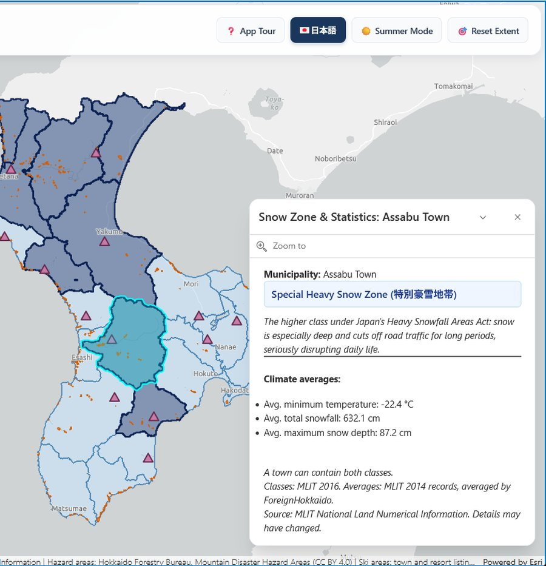

GEOG 778 · Capstone
ForeignHokkaido
A free, bilingual, mobile-first map for Assistant Language Teachers in southwestern Hokkaido.
Purpose. New ALTs must find hospitals, shelters, garbage rules and winter hazards in a second language, across dozens of Japanese-only websites. This puts the answers on one English and Japanese map for all 18 municipalities of Oshima and Hiyama.
Method. Esri JavaScript SDK on GitHub Pages with ArcGIS Online hosted layers, SQL and Arcade queries, a nearest-three lookup, winter and summer modes, and Survey123 community layers. Tested with a group of ALTs.